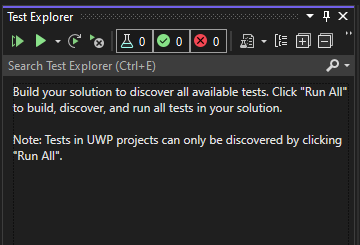
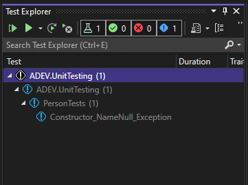
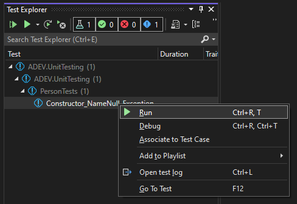
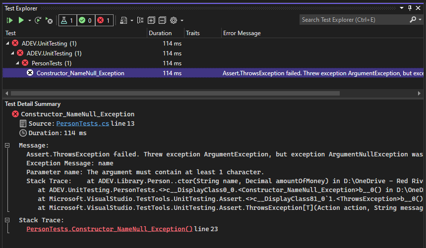
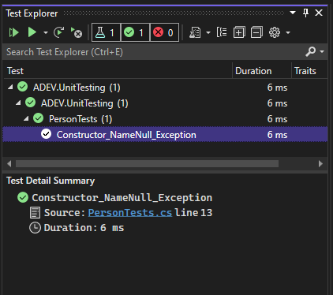
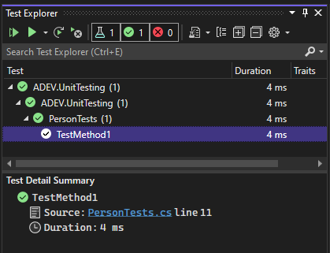

Running Unit Tests
Table of Contents
Test Explorer
The Test Explorer is a panel within Visual Studio. It is used to run unit tests. The Test Explorer is not usually visible by default. To open the panel, go to View > Test Explorer on the menu strip or use the keyboard shortcut Ctrl + E, T. While you are unit testing, you may want to pin the Test Explorer panel so it is always visible.

Like the Solution Explorer, the Test Explorer is populated with nodes. The first node represents a test project. All the namespaces within the test project will be child nodes of the test project. Test class nodes are child nodes of the namespace nodes. Unit test nodes are child nodes of test class nodes.

Test Explorer Hierarchy
- Project
- Namespace
- Unit Test Class
- Unit Test Method
- Unit Test Class
- Namespace
If the Test Explorer is not populating with your Unit Test Class or Unit Test Methods, ensure you have used the TestClass and TestMethod attributes. Also, the test class must build. Syntax errors may prevent the Test Explorer from populating.
Running Tests
It is recommended that after completing a unit test method you will run it. To run a unit test, right-click the unit test method node in the Test Explorer and choose Run from the context menu.

You can execute all tests or a grouping of tests. It is recommended to execute tests individually. When a test fails, you will want to fix the defect until the test passes before moving on with your testing.
Test Results
After running a test, the icons next to the Project, Namespace, Class, and Method will show you the result of tests in that grouping.

If you select a unit test node in the Test Explorer, the Test Detail Summary panel will populate information about the results of the test. It is important to read this information carefully when a test fails. It is this information that will help you figure out why the test if failing.

Tests That Fail
A unit test method results in a Failed status when an exception occurs during the execution of the unit test method. Exceptions will occur in two cases:
- The
Assertmethod used to evaluate the result of the test throws anAssertFailedException. - An unexpected exception of any other type is thrown.
You should not handle exceptions you are not intentionally throwing in your test just to make the test pass. An exception is telling you something is wrong.
When a unit test method fails, it doesn’t necessarily mean the unit you are testing has a defect. If you wrote a statement in your unit test that is causing an exception, it will cause the unit test method to fail.
To avoid making unnecessary changes to your code, follow these steps:
- Read the test details carefully. In most cases, you can figure out where the problem is from this information.
- If the test details are not helping, read through you unit test method code looking for an error. This may require you to trace the code.
- If the unit test code looks good, read through the unit’s code that you are testing. This may require you to trace the code.
If you are not able to solve a failed test, reach out to your instructor for assistance.
Tests That Pass
A unit test method that completes successfully will result an a Passed status.

Writing a unit test method and getting a Passed status after running it is a great feeling. You want to also be mindful that a Passed status does not necessarily mean the unit doesn’t have a defect.
Consider the following unit test method:
namespace ADEV.UnitTesting
{
[TestClass]
public class PersonTests
{
[TestMethod]
public void TestMethod1()
{
}
}
}
Remember that the only criteria for producing a Passed status is for the unit test method to complete successfully. The unit test method above contains no code and will result in a Passed status.
